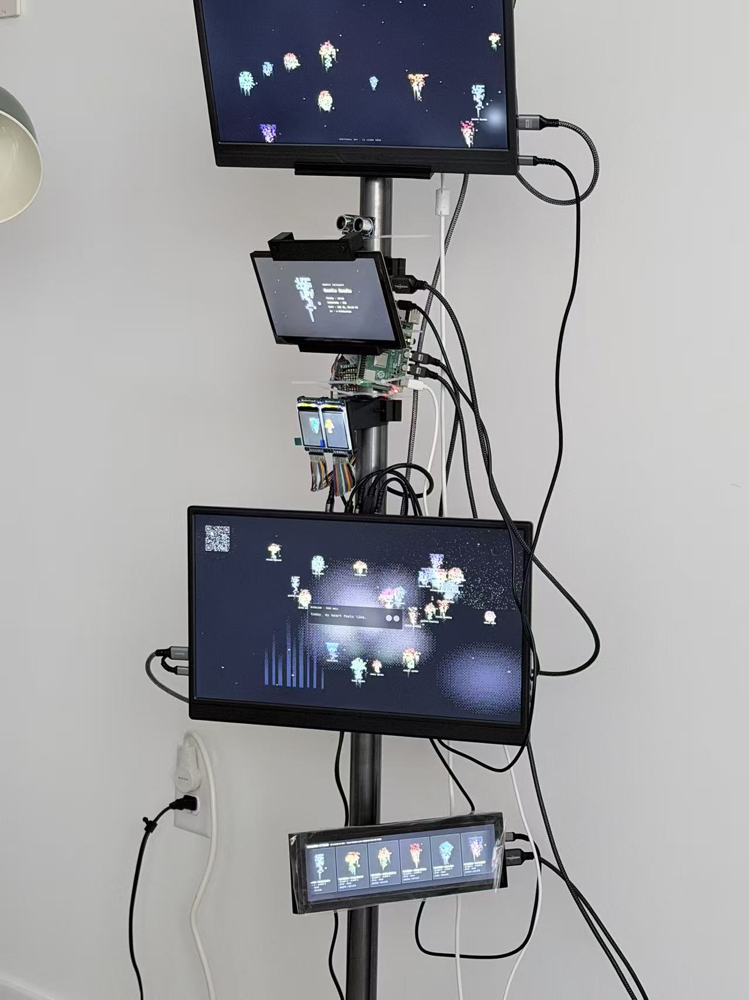
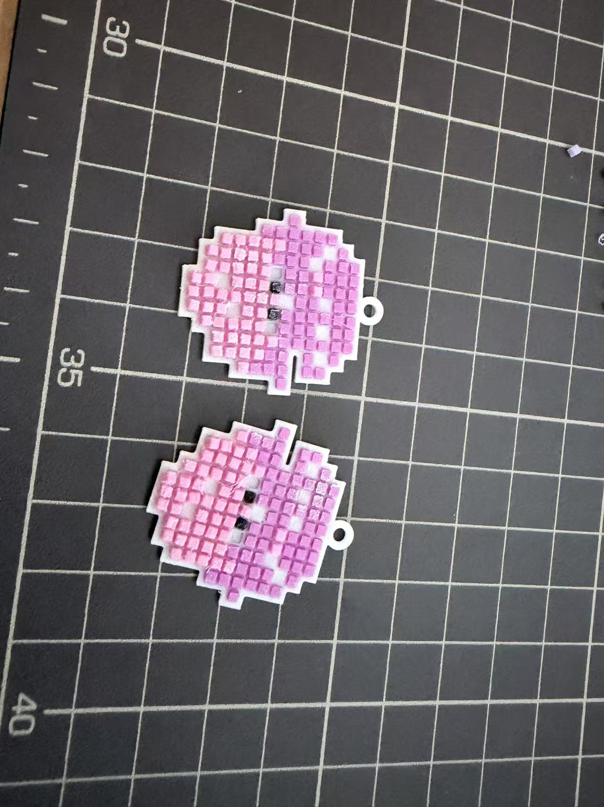
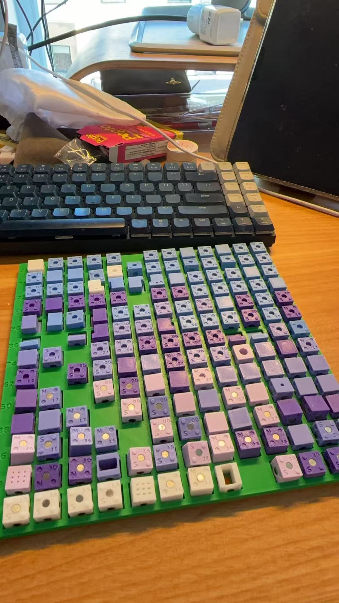
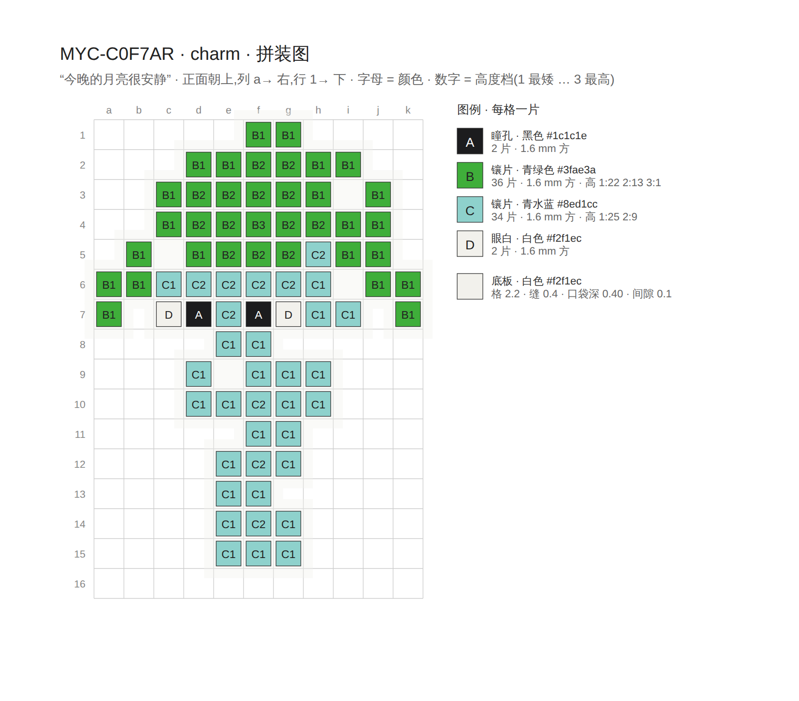
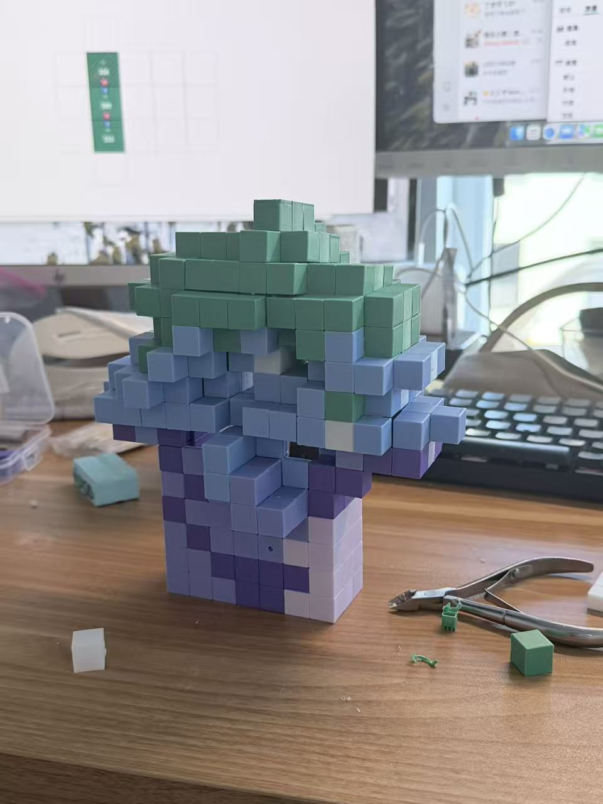
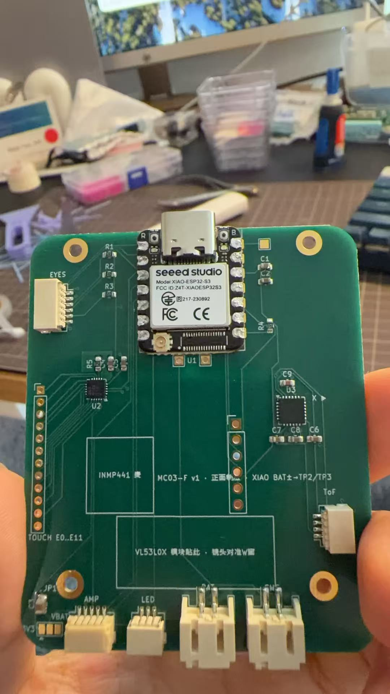

I build strange but genuinely working artifacts — a deity you summon, a hall of AI clerks, a room of small screens — and take each one seriously as a way to ask a research question. Let's make some digital magic. 我造一些奇怪、却真的能运行的作品——一位可被召唤的神明、一座 AI 办事大厅、一屋子小小的屏幕——再把每一个当作提出研究问题的方式。一起造点数字魔法。
I work across interaction design, interactive art, and research through design. I'm interested in the long work of becoming — how our values, sense of self, and understanding of the world keep shifting across a life — and in how design might make that negotiation gentler, without dictating where anyone should land. Currently preparing work toward CHI and applying to HCI PhD programs. 我工作横跨交互设计、交互艺术与研究性设计。我关注漫长的“成为”——价值、自我与世界理解如何在一生中不断变化——以及设计如何让这场协商更温和，同时不去规定任何人最终落在哪里。目前正为 CHI 投稿准备，并申请 HCI 博士项目。
◇ Research研究
- HCI
- Mixed Methods
- Research through Design
- Value Negotiation
◇ Design设计
- Figma
- Interaction
- Motion
- Exhibition
◇ Making造物
- three.js
- Vanilla JS
- Painting
- Sound
Writing论文
Soft Support: Holding, Not Fixing, Value Reconfiguration in Emerging Adulthood
A design framework for supporting people aged 18–29 while life rebuilds their values — without correcting them, hurrying them, or steering where they land. 一个设计框架：在 18–29 岁、价值观被生活不断重组的阶段提供支持，但不纠正、不催促、也不替人决定落点。
- A mechanism-level framework (soft support) that joins meaning-making psychology with reflective design机制层框架（soft support）：把意义建构心理学和反思设计接在一起
- A role inversion — breakdown-holding: designing for people already in disruption, with provisional settlement instead of resolution角色反转（breakdown-holding）：为已经身处断裂中的人设计，用"暂时安放"替代"解决"
- A built-in evaluation (softness × depth) that says exactly how this kind of design can fail内建评估（softness × depth）：写明这种设计怎样才算失败
- A research instrument and first deployment — the framework's data rules enforced in code, across 2,183 audience accounts研究工具与首次部署：把框架的数据规则写进代码，覆盖 2,183 个观众账户
Recently launched最近上线
Drag the wheel to flip albums · press the center to open · ← → also work拖动转盘切换“专辑” · 按中心打开 · 也可用 ← →
◇ New · The Whisper Network, off-screen新 · 菌丝网络走下屏幕
The Whisper Network now has a body: a five-foot steel column with six screens and a tree hole inside. Whisper one sentence and a pixel spore grows. Your sentence never shows on any screen — only the spore it grew. 菌丝网络现在有了身体：一根五英尺的钢柱，挂着六块屏，树洞装在里面。对它说一句话，就长出一只像素孢子。你说的话不会出现在任何屏幕上——公开的只有长出来的那只孢子。
BU ART MARKET
- Sit down and whisper a sentence to the tower坐下来，对塔说一句话
- Like your spore? We'll make it into a charm on the spot喜欢长出来的孢子？现场做成吊坠带走
- Tell us how it felt — a 2-minute anonymous form说说感受——两分钟匿名问卷






Preparing work toward CHI · applying to HCI PhD programs.正为 CHI 投稿准备 · 申请 HCI 博士项目。
© 2026 Yue Yao · Boston, MA马萨诸塞州，波士顿 · Built as a little operating system.做成一个小小的操作系统。